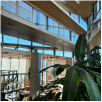
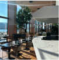
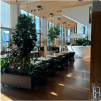
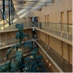
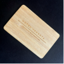
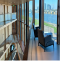
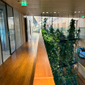
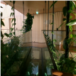
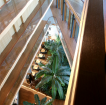

Eigen Ervaring
De zorgvuldig aangelegde tuinen en de tropische sfeer creëren een heerlijke omgeving, perfect om te ontspannen na een drukke dag. Het personeel is bovendien vriendelijk en behulpzaam, wat het verblijf nog aangenamer maakt. Elk hoekje van het hotel ademt een unieke charme en zorgt ervoor dat je je meteen thuis voelt.
Het café in Hotel Jakarta kan je heerlijke koffie drinken. Het cafe maakt gebruik van uitsluitend duurzame geproduceerde koffiebonen, afkomstig van boeren die werken volgens eerlijk en milieuvriendelijke landbouwpraktijken.



Hotel Jakarta beschikt over 200 voorgefabriceerde hotelkamers, waarvan 80% uit hout en 20% uit beton bestaat. Het beton bevat betongranulaat, een materiaal dat wordt vervaardigd uit gerecycled betonpuin en vroeger veel werd toegepast in de wegenbouw.



Ik heb enorm genoten van mijn verblijf in Hotel Jakarta. Bij binnenkomst ervaar je direct een oase van rust, omringd door prachtig groen en natuur.


